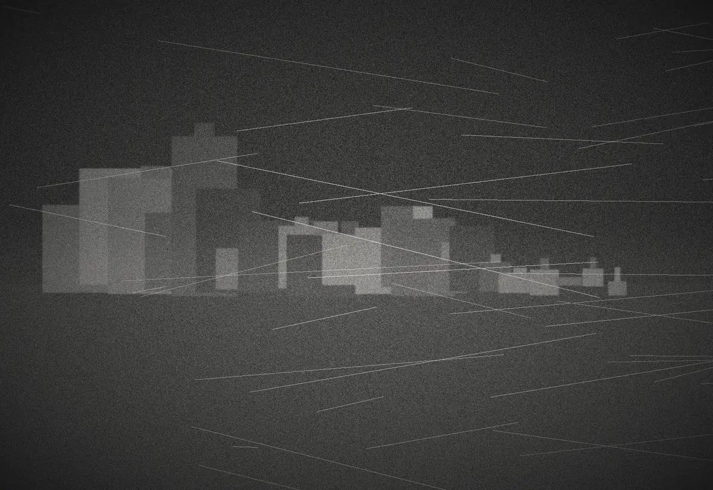

Sharp Records opens in Manchester
A new imprint for independent electronic music, run from the city that taught British dance music how to look as sharp as it sounds. Rooted in jungle, garage, techno, house, breaks and experimental forms, the label starts without a fixed genre and without a brief to imitate what already works.
More than a catalogue, Sharp is meant as a platform for music, art and culture — a space for collaboration, discovery and creative experimentation.